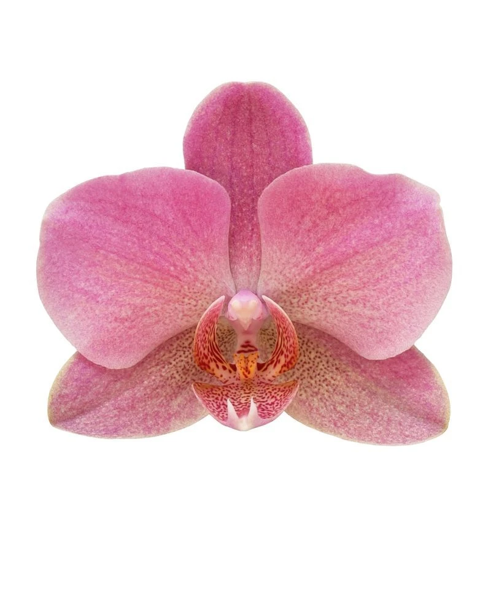
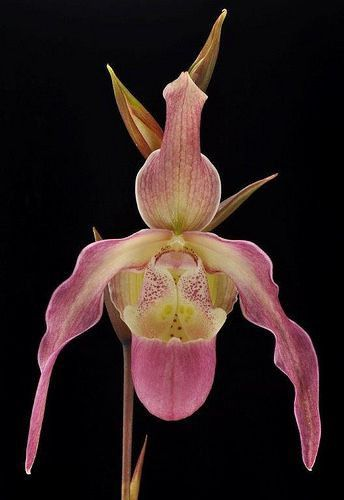
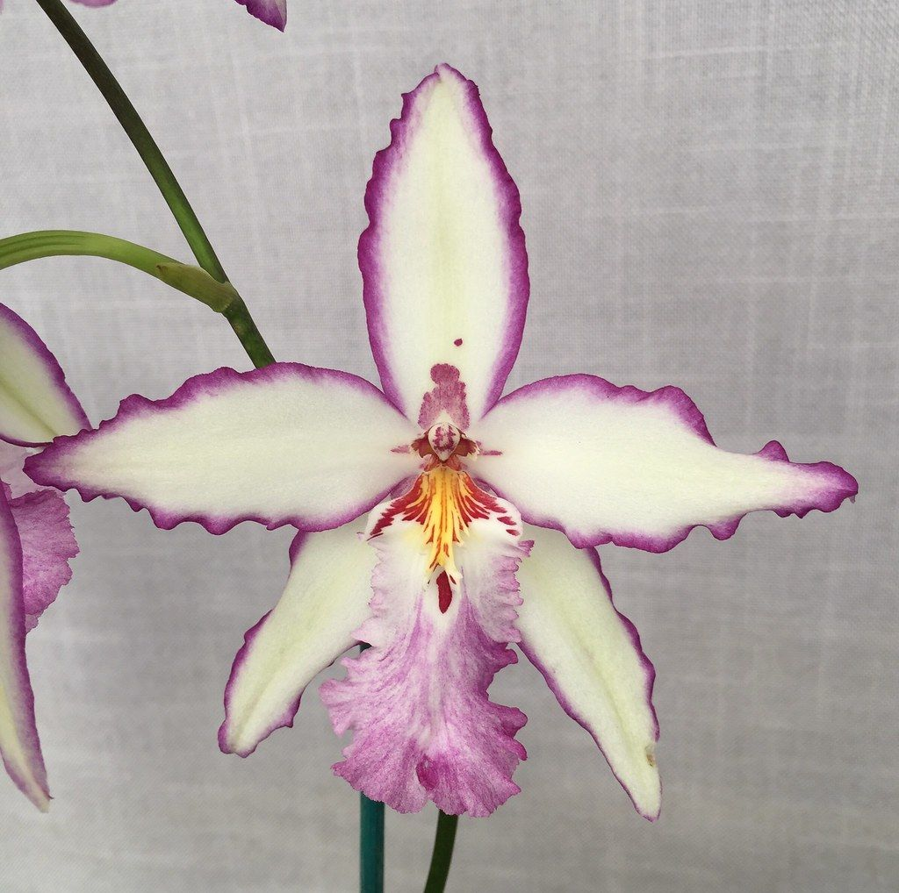
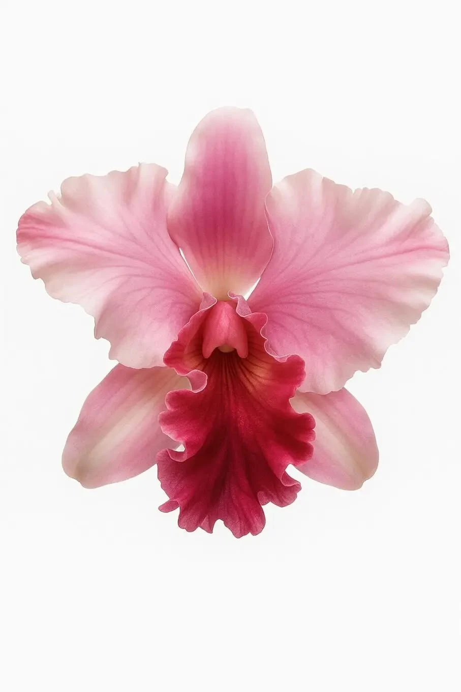

Volume one · pink + greenOrchidelirium
Twenty-eight thousand species, and every one of them is showing off for an insect that may not even exist any more.
This is a diary I keep about orchids. Each entry is one page on one idea — how the flower is built, who lives in the family, how to keep one alive on a windowsill, how to make more of them, and why perfectly sensible people have been ruining themselves over these plants since about 1830.

Pantone®
13-3207 TCX
Cherry Blossom


The entries
turn to any pageWhat makes an orchid an orchid
Three sepals, three petals, one of them turned into a landing strip — and a bud that rotates a half-turn before it opens.
Read → Entry 02Who's who in the family
Twelve genera worth knowing by sight, plus the show-offs: the ghost, the underground one, the bee impersonator.
Read → Entry 03How to keep one alive
Light, water, air, and the three things everyone gets wrong. Including the ice cube. Please stop with the ice cube.
Read → Entry 04Making more of them
Keikis, division, dust-sized seed that can't feed itself, and the lab trick that made orchids affordable.
Read → Entry 05Orchidelirium & other obsessions
A Greek word for a testicle, a Victorian fever, Darwin's moth, and a twelve-year-old boy who made vanilla possible.
Read → Entry 06The back pages
Every word I had to look up, in one searchable list — plus where to go and stare at real ones.
Read →Orchid seed has no packed lunch. Almost every other seed carries a store of food; an orchid seed carries nothing. In the wild it can only germinate if the right fungus finds it first and feeds it.
An orchid bud opens upside down — then fixes it. As it develops, the flower stalk twists a full 180°, so the lip that began at the top arrives at the bottom, exactly where a landing insect needs it. The word for that is resupination.
Darwin saw a Madagascan orchid with a nectar tube nearly 30 cm deep and said there must be a moth with a tongue to match. Everyone thought he was joking. The moth was described in 1903, twenty-one years after he died.
Vanilla is a climbing orchid, and it is the only orchid farmed as a food crop. Outside Mexico every single pod is pollinated by hand, using a method worked out in 1841 by Edmond Albius, an enslaved twelve-year-old on Réunion.

the corsage flower. your great‑grandmother pinned one of these to a coat.